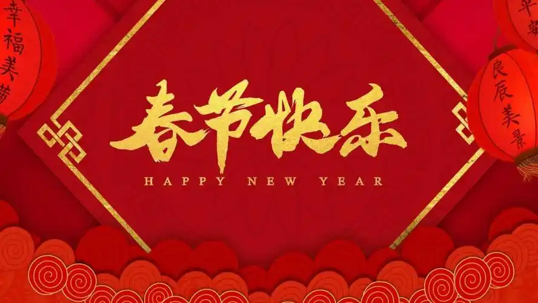
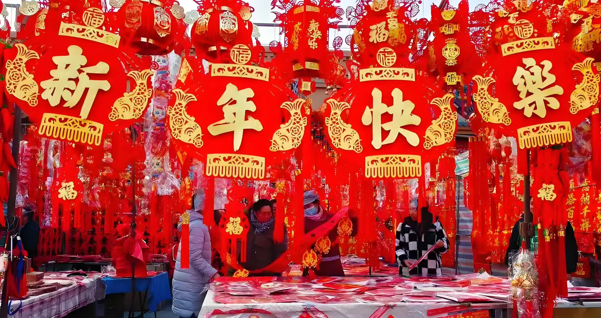

春节
春节倒计时
历史背景
春节，也被称为“农历新年”，是中国最重要的传统节日之一，通常 在农历的正月初一庆祝，标志着新一年的开始。春节的起源可以追溯 到几千年前的古代中国。最初的元宵源于古人对自然和时令变化的敬 畏，尤其是对“年兽”的传说。据说，年兽每到除夕夜便会出来作恶，古 人通过祭祀、放鞭炮、贴春联等方式驱赶年兽，祈求新的一年安康。随 着时间的推移，春节逐渐成为一个包含家庭团聚、辞旧迎新、欢庆丰收 等多重文化活动的节日。
文化意义
春节代表着新的开始和希望，是中国最重要的家庭节日，强调亲情和团圆。 春节的庆祝活动通常持续数天，家家户户都忙着准备年夜饭、打扫房屋、贴春 联、挂灯笼。春节期间，吃团圆饭是最重要的传统，象征着家庭的和谐美满。 此外，元宵还强调“红色文化”，通过红包、穿新衣、贴红对联等方式祈求好运。 春节不仅是一个家庭聚会的时刻，也是全民欢庆的时刻，它传递了中国人对新的 一年充满希望与期待的心愿。.